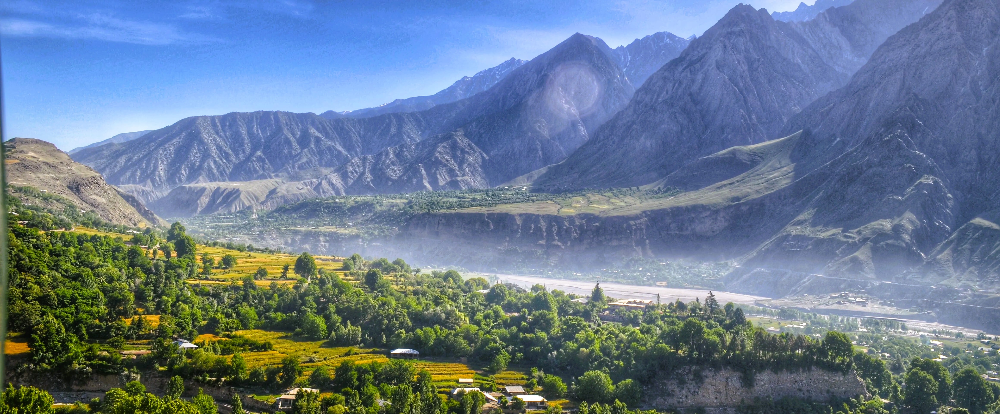

<div class="portfolio-single-load clearfix">
    <div class="custom-full-width-box">
        <div class="custom-container">
            <div class="custom-row align-items-center">
                <div class="custom-image-column">
                    
                </div>
                <div class="custom-text-column">
                    <h2 class="custom-heading">Bumburet</h2>
                    <p class="custom-paragraph">
                        
                        Bumburet Valley, the largest valley in the Kalash region, is located 20 kilometers from Ayun Valley. Known for its trout fishing opportunities, this valley boasts stunning landscapes and cultural heritage. Visitors can Venture on treks from Karakal to Shaikh Darna, passing by a trout hatchery and a magnificent wooden mosque along the way.

                    </p>
                </div>
            </div>
        </div>
    </div><!-- .custom-full-width-box end -->

</div><!-- end single-project -->
